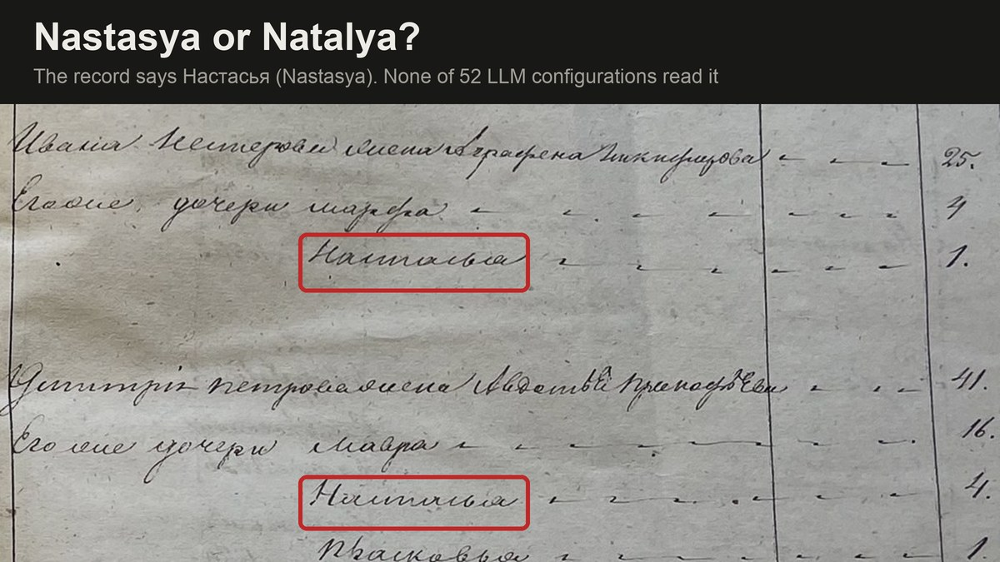

Which model reads old Russian records best: a test of LLM configurations on 18th-19th century handwriting

This article answers one question: which LLM reads old Russian handwritten documents best. I measured how the leading models perform on a specially selected set of records and compared them by the number of reading errors and by cost. The best result came from Gemini 4 Carbon at low effort: it leaves as few unnoticed reading errors as Claude Fable 5.2 and Gemini 4 Neon, and costs six to eight times less.
Why this matters
Ever since LLMs became widely available, people who do genealogy have been trying to use them to read old documents. The dream of a machine that quickly reads hundreds of pages written in a difficult hand and an unfamiliar orthography, and then analyses them, has always been tempting. Early models did this poorly: either there were too many errors, or the model did not understand the structure of the document. As the models and the ways of using them improved, they became usable for reading old manuscripts. In my experience, starting roughly with Gemini 3 Pro the recognition reached an acceptable level, and it became possible to build an LLM into the reading workflow.
Today almost every leading model reads such documents and understands their structure. The question is no longer whether an LLM can be used to read parish registers, but which model to take and what it costs.